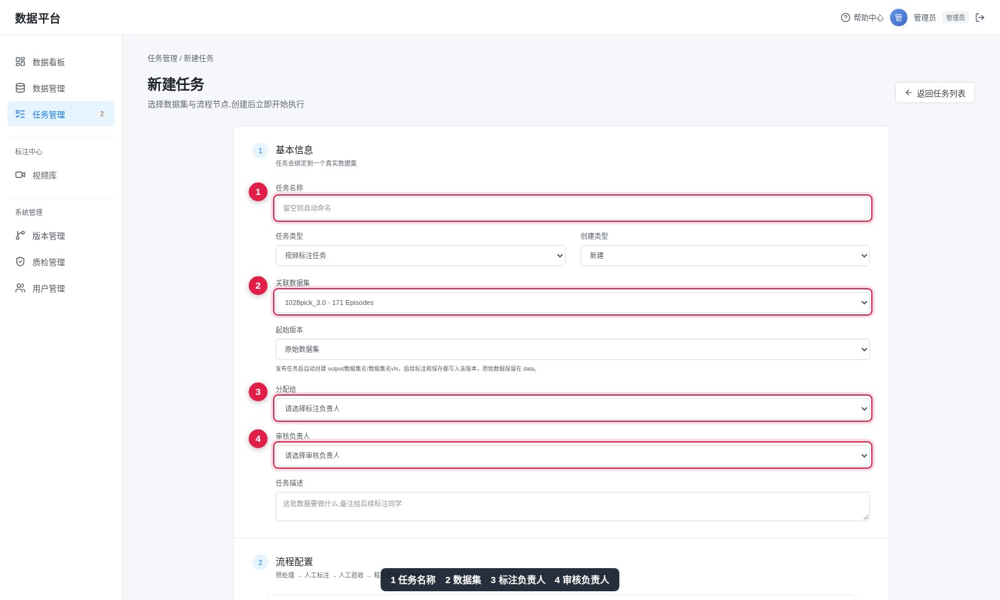
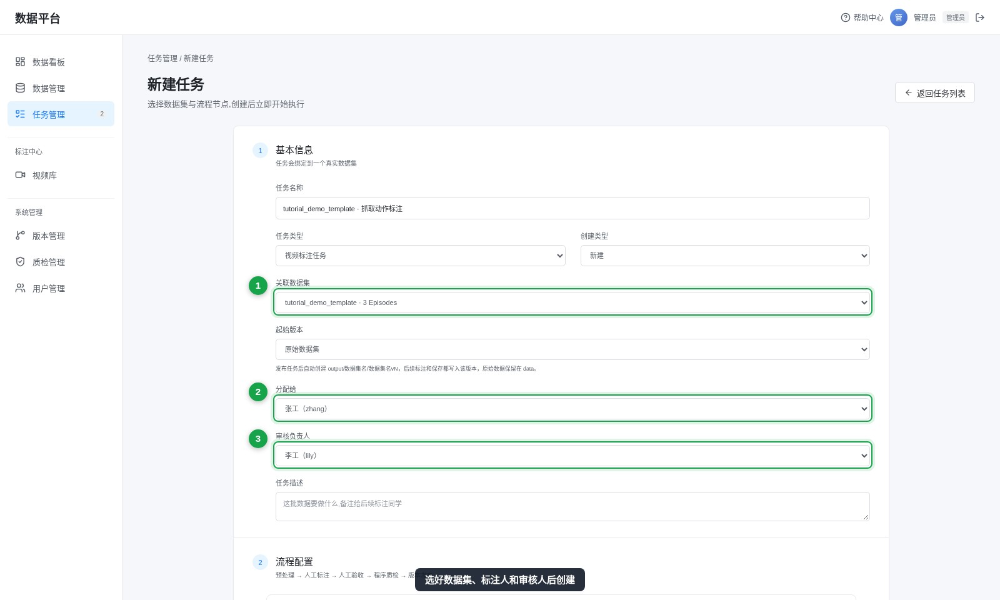
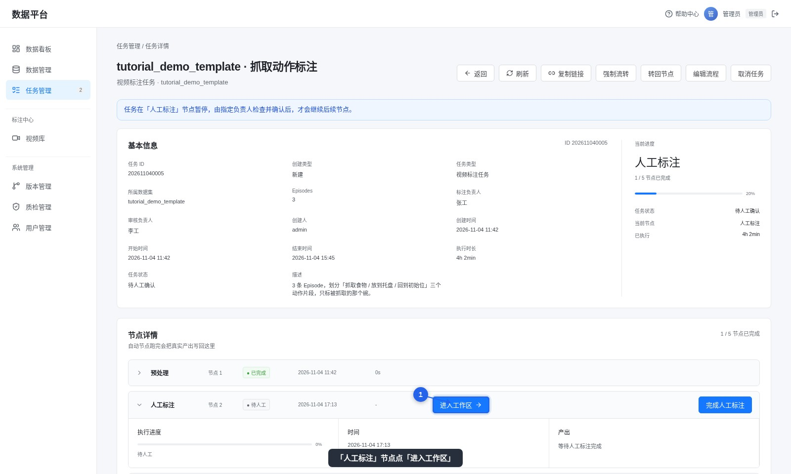

2. 新建标注任务
左侧「任务管理 → 新建任务」。任务必须绑定一个真实数据集，创建时会在 output/ 下自动建一份独立副本，标注只写副本。
填写表单


要接着已有版本改，在「起始版本」里选对应版本；否则从原始数据开始。
进入任务
创建后任务自动跑完「预处理」，停在「人工标注」节点等人。

左侧「任务管理 → 新建任务」。任务必须绑定一个真实数据集，创建时会在 output/ 下自动建一份独立副本，标注只写副本。


创建后任务自动跑完「预处理」，停在「人工标注」节点等人。
